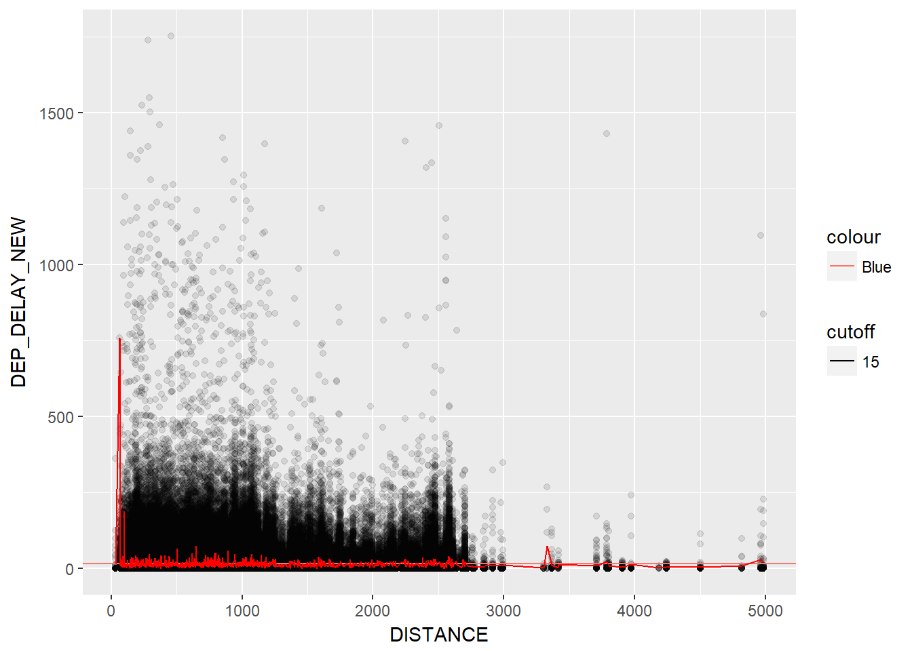

Demostic flight delay in May 2017
With the relationship of geographic…
Zeping He
Introduction
With more and more people choose plane to travel, the on-time performace becomes important. I will focus on airline on-time data of May 2017. First, I will test the relationship between “Distance” and “Delay time”, I might use ggplot to draw 2D plot. Second, I would like use leaflet to create an interative map shows the Geographical distribution of Airport related to Average delay-time. For My hypothsis, I assume distance and delay-time will have a negative relationship. The geographical pattern should be clear to see.
I know words. I have the best words. ~ Donald Trump
Materials and methods
Data Source:
- Filght on-time Performance — from BUREAU OF TRANSPORTATION STATISTICS
- Airport Location Data — BUREAU OF TRANSPORTATION STATISTICS
Poposed Mehod:
- Data prepartion (Creat another dataframe by Merge two csv file )
- General view the airport location distribubtion
- Use ggplot to see the relationship between distance
See http://rmarkdown.rstudio.com/ for all the amazing things you can do.
Load any required packages in a code chunk (you may need to install some packages): # Data
library(dplyr)
library(ggplot2)
library(maps)
library(spocc)
library(leaflet)
knitr::opts_chunk$set(cache=TRUE) # cache the results for quick compilingFirst you need to import airline performance data.
library(readr)
May17flight <- read_csv("data/May17flight.csv")## Warning: Missing column names filled in: 'X25' [25]## Parsed with column specification:
## cols(
## .default = col_character(),
## FL_DATE = col_date(format = ""),
## ORIGIN_AIRPORT_ID = col_integer(),
## ORIGIN_WAC = col_integer(),
## DEST_AIRPORT_ID = col_integer(),
## DEST_AIRPORT_SEQ_ID = col_integer(),
## DEST_CITY_MARKET_ID = col_integer(),
## DEST_WAC = col_integer(),
## DEP_DELAY_NEW = col_double(),
## ARR_DELAY_NEW = col_double(),
## AIR_TIME = col_double(),
## FLIGHTS = col_double(),
## DISTANCE = col_double()
## )## See spec(...) for full column specifications.AirportData <- read_csv("data/AirportData.csv")## Parsed with column specification:
## cols(
## AIRPORT_ID = col_integer(),
## Code = col_character(),
## DISPLAY_AIRPORT_NAME = col_character(),
## LATITUDE = col_double(),
## LONGITUDE = col_double()
## )We can find some duplicated Data, Remove them
AirportData_nd=AirportData[!duplicated(AirportData$Code),]You can view the domestic airport list by use “unique”
codeunique=data.frame(unique(May17flight$ORIGIN))
colnames(codeunique)="Code"
length(unique(May17flight$ORIGIN))## [1] 296Obtain Airdata coordinate by “left-join”
airport_joined=left_join(codeunique, AirportData_nd, by = "Code")## Warning: Column `Code` joining factor and character vector, coercing into
## character vectorView the Location Map Use “Leaflet”
leaflet() %>% addProviderTiles(providers$OpenStreetMap) %>% addMarkers(airport_joined$LONGITUDE,airport_joined$LATITUDE,popup=airport_joined$DISPLAY_AIRPORT_NAME,clusterOptions = markerClusterOptions())ggplot
p=ggplot(subset(May17flight,!is.na(DEP_DELAY_NEW)),aes(x=DISTANCE,y=DEP_DELAY_NEW))
p+geom_point(alpha=0.1)
p=ggplot(May17flight, aes(x = DISTANCE, y = DEP_DELAY_NEW, color = factor(CARRIER)))
p+geom_point(alpha=0.1)## Warning: Removed 3866 rows containing missing values (geom_point). Only View Three Major Airlines
Only View Three Major Airlines
ggplot(subset(May17flight,CARRIER %in% c("AA","UA","DL")),aes(x = DISTANCE, y = DEP_DELAY_NEW, color = factor(CARRIER)))+ geom_point(alpha=0.3)## Warning: Removed 546 rows containing missing values (geom_point).
We are going to use the occ() function to download occurrence records for the American robin (Turdus migratorius) from the Global Biodiversity Information Facility.
 Licensed under CC BY-SA 3.0 via Wikimedia Commons
Licensed under CC BY-SA 3.0 via Wikimedia Commons
{kind=link}
## define which species to query
sp='Turdus migratorius'
## run the query and convert to data.frame()
d = occ(query=sp, from='ebird',limit = 100) %>% occ2df()This can take a few seconds.
# Load coastline
map=map_data("world")
ggplot(d,aes(x=longitude,y=latitude))+
geom_polygon(aes(x=long,y=lat,group=group),data=map)+
geom_point(col="red")+
coord_equal()
Map illustrating the known occurrence locations
Results
Show tables, plots, etc. and describe them.
Conclusions
What have you learned? Are there any broader implications?